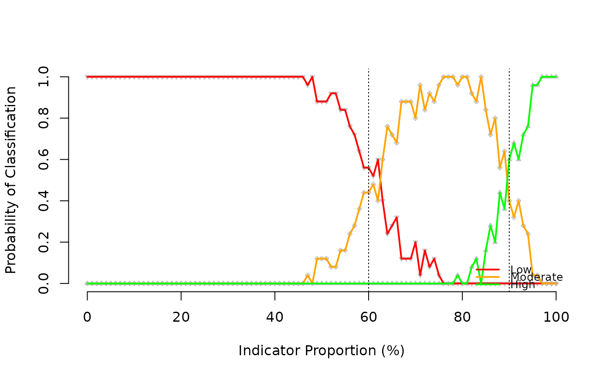

plot helper function for test_lqas_classifier functionplot.lqasSim.Rdplot helper function for test_lqas_classifier function
# S3 method for lqasSim plot(x, ...)
| x | An object of class |
|---|---|
| ... | Additional |
An LQAS probability of classification plot
x <- test_lqas_classifier(replicates = 5, runs = 5, pop = 10000, n = 40, d.lower = 60, d.upper = 90)#> Running simulations for proportion := 0% #> Running simulations for proportion := 1% #> Running simulations for proportion := 2% #> Running simulations for proportion := 3% #> Running simulations for proportion := 4% #> Running simulations for proportion := 5% #> Running simulations for proportion := 6% #> Running simulations for proportion := 7% #> Running simulations for proportion := 8% #> Running simulations for proportion := 9% #> Running simulations for proportion := 10% #> Running simulations for proportion := 11% #> Running simulations for proportion := 12% #> Running simulations for proportion := 13% #> Running simulations for proportion := 14% #> Running simulations for proportion := 15% #> Running simulations for proportion := 16% #> Running simulations for proportion := 17% #> Running simulations for proportion := 18% #> Running simulations for proportion := 19% #> Running simulations for proportion := 20% #> Running simulations for proportion := 21% #> Running simulations for proportion := 22% #> Running simulations for proportion := 23% #> Running simulations for proportion := 24% #> Running simulations for proportion := 25% #> Running simulations for proportion := 26% #> Running simulations for proportion := 27% #> Running simulations for proportion := 28% #> Running simulations for proportion := 29% #> Running simulations for proportion := 30% #> Running simulations for proportion := 31% #> Running simulations for proportion := 32% #> Running simulations for proportion := 33% #> Running simulations for proportion := 34% #> Running simulations for proportion := 35% #> Running simulations for proportion := 36% #> Running simulations for proportion := 37% #> Running simulations for proportion := 38% #> Running simulations for proportion := 39% #> Running simulations for proportion := 40% #> Running simulations for proportion := 41% #> Running simulations for proportion := 42% #> Running simulations for proportion := 43% #> Running simulations for proportion := 44% #> Running simulations for proportion := 45% #> Running simulations for proportion := 46% #> Running simulations for proportion := 47% #> Running simulations for proportion := 48% #> Running simulations for proportion := 49% #> Running simulations for proportion := 50% #> Running simulations for proportion := 51% #> Running simulations for proportion := 52% #> Running simulations for proportion := 53% #> Running simulations for proportion := 54% #> Running simulations for proportion := 55% #> Running simulations for proportion := 56% #> Running simulations for proportion := 57% #> Running simulations for proportion := 58% #> Running simulations for proportion := 59% #> Running simulations for proportion := 60% #> Running simulations for proportion := 61% #> Running simulations for proportion := 62% #> Running simulations for proportion := 63% #> Running simulations for proportion := 64% #> Running simulations for proportion := 65% #> Running simulations for proportion := 66% #> Running simulations for proportion := 67% #> Running simulations for proportion := 68% #> Running simulations for proportion := 69% #> Running simulations for proportion := 70% #> Running simulations for proportion := 71% #> Running simulations for proportion := 72% #> Running simulations for proportion := 73% #> Running simulations for proportion := 74% #> Running simulations for proportion := 75% #> Running simulations for proportion := 76% #> Running simulations for proportion := 77% #> Running simulations for proportion := 78% #> Running simulations for proportion := 79% #> Running simulations for proportion := 80% #> Running simulations for proportion := 81% #> Running simulations for proportion := 82% #> Running simulations for proportion := 83% #> Running simulations for proportion := 84% #> Running simulations for proportion := 85% #> Running simulations for proportion := 86% #> Running simulations for proportion := 87% #> Running simulations for proportion := 88% #> Running simulations for proportion := 89% #> Running simulations for proportion := 90% #> Running simulations for proportion := 91% #> Running simulations for proportion := 92% #> Running simulations for proportion := 93% #> Running simulations for proportion := 94% #> Running simulations for proportion := 95% #> Running simulations for proportion := 96% #> Running simulations for proportion := 97% #> Running simulations for proportion := 98% #> Running simulations for proportion := 99% #> Running simulations for proportion := 100% #> Running simulations for proportion := 0% #> Running simulations for proportion := 1% #> Running simulations for proportion := 2% #> Running simulations for proportion := 3% #> Running simulations for proportion := 4% #> Running simulations for proportion := 5% #> Running simulations for proportion := 6% #> Running simulations for proportion := 7% #> Running simulations for proportion := 8% #> Running simulations for proportion := 9% #> Running simulations for proportion := 10% #> Running simulations for proportion := 11% #> Running simulations for proportion := 12% #> Running simulations for proportion := 13% #> Running simulations for proportion := 14% #> Running simulations for proportion := 15% #> Running simulations for proportion := 16% #> Running simulations for proportion := 17% #> Running simulations for proportion := 18% #> Running simulations for proportion := 19% #> Running simulations for proportion := 20% #> Running simulations for proportion := 21% #> Running simulations for proportion := 22% #> Running simulations for proportion := 23% #> Running simulations for proportion := 24% #> Running simulations for proportion := 25% #> Running simulations for proportion := 26% #> Running simulations for proportion := 27% #> Running simulations for proportion := 28% #> Running simulations for proportion := 29% #> Running simulations for proportion := 30% #> Running simulations for proportion := 31% #> Running simulations for proportion := 32% #> Running simulations for proportion := 33% #> Running simulations for proportion := 34% #> Running simulations for proportion := 35% #> Running simulations for proportion := 36% #> Running simulations for proportion := 37% #> Running simulations for proportion := 38% #> Running simulations for proportion := 39% #> Running simulations for proportion := 40% #> Running simulations for proportion := 41% #> Running simulations for proportion := 42% #> Running simulations for proportion := 43% #> Running simulations for proportion := 44% #> Running simulations for proportion := 45% #> Running simulations for proportion := 46% #> Running simulations for proportion := 47% #> Running simulations for proportion := 48% #> Running simulations for proportion := 49% #> Running simulations for proportion := 50% #> Running simulations for proportion := 51% #> Running simulations for proportion := 52% #> Running simulations for proportion := 53% #> Running simulations for proportion := 54% #> Running simulations for proportion := 55% #> Running simulations for proportion := 56% #> Running simulations for proportion := 57% #> Running simulations for proportion := 58% #> Running simulations for proportion := 59% #> Running simulations for proportion := 60% #> Running simulations for proportion := 61% #> Running simulations for proportion := 62% #> Running simulations for proportion := 63% #> Running simulations for proportion := 64% #> Running simulations for proportion := 65% #> Running simulations for proportion := 66% #> Running simulations for proportion := 67% #> Running simulations for proportion := 68% #> Running simulations for proportion := 69% #> Running simulations for proportion := 70% #> Running simulations for proportion := 71% #> Running simulations for proportion := 72% #> Running simulations for proportion := 73% #> Running simulations for proportion := 74% #> Running simulations for proportion := 75% #> Running simulations for proportion := 76% #> Running simulations for proportion := 77% #> Running simulations for proportion := 78% #> Running simulations for proportion := 79% #> Running simulations for proportion := 80% #> Running simulations for proportion := 81% #> Running simulations for proportion := 82% #> Running simulations for proportion := 83% #> Running simulations for proportion := 84% #> Running simulations for proportion := 85% #> Running simulations for proportion := 86% #> Running simulations for proportion := 87% #> Running simulations for proportion := 88% #> Running simulations for proportion := 89% #> Running simulations for proportion := 90% #> Running simulations for proportion := 91% #> Running simulations for proportion := 92% #> Running simulations for proportion := 93% #> Running simulations for proportion := 94% #> Running simulations for proportion := 95% #> Running simulations for proportion := 96% #> Running simulations for proportion := 97% #> Running simulations for proportion := 98% #> Running simulations for proportion := 99% #> Running simulations for proportion := 100% #> Running simulations for proportion := 0% #> Running simulations for proportion := 1% #> Running simulations for proportion := 2% #> Running simulations for proportion := 3% #> Running simulations for proportion := 4% #> Running simulations for proportion := 5% #> Running simulations for proportion := 6% #> Running simulations for proportion := 7% #> Running simulations for proportion := 8% #> Running simulations for proportion := 9% #> Running simulations for proportion := 10% #> Running simulations for proportion := 11% #> Running simulations for proportion := 12% #> Running simulations for proportion := 13% #> Running simulations for proportion := 14% #> Running simulations for proportion := 15% #> Running simulations for proportion := 16% #> Running simulations for proportion := 17% #> Running simulations for proportion := 18% #> Running simulations for proportion := 19% #> Running simulations for proportion := 20% #> Running simulations for proportion := 21% #> Running simulations for proportion := 22% #> Running simulations for proportion := 23% #> Running simulations for proportion := 24% #> Running simulations for proportion := 25% #> Running simulations for proportion := 26% #> Running simulations for proportion := 27% #> Running simulations for proportion := 28% #> Running simulations for proportion := 29% #> Running simulations for proportion := 30% #> Running simulations for proportion := 31% #> Running simulations for proportion := 32% #> Running simulations for proportion := 33% #> Running simulations for proportion := 34% #> Running simulations for proportion := 35% #> Running simulations for proportion := 36% #> Running simulations for proportion := 37% #> Running simulations for proportion := 38% #> Running simulations for proportion := 39% #> Running simulations for proportion := 40% #> Running simulations for proportion := 41% #> Running simulations for proportion := 42% #> Running simulations for proportion := 43% #> Running simulations for proportion := 44% #> Running simulations for proportion := 45% #> Running simulations for proportion := 46% #> Running simulations for proportion := 47% #> Running simulations for proportion := 48% #> Running simulations for proportion := 49% #> Running simulations for proportion := 50% #> Running simulations for proportion := 51% #> Running simulations for proportion := 52% #> Running simulations for proportion := 53% #> Running simulations for proportion := 54% #> Running simulations for proportion := 55% #> Running simulations for proportion := 56% #> Running simulations for proportion := 57% #> Running simulations for proportion := 58% #> Running simulations for proportion := 59% #> Running simulations for proportion := 60% #> Running simulations for proportion := 61% #> Running simulations for proportion := 62% #> Running simulations for proportion := 63% #> Running simulations for proportion := 64% #> Running simulations for proportion := 65% #> Running simulations for proportion := 66% #> Running simulations for proportion := 67% #> Running simulations for proportion := 68% #> Running simulations for proportion := 69% #> Running simulations for proportion := 70% #> Running simulations for proportion := 71% #> Running simulations for proportion := 72% #> Running simulations for proportion := 73% #> Running simulations for proportion := 74% #> Running simulations for proportion := 75% #> Running simulations for proportion := 76% #> Running simulations for proportion := 77% #> Running simulations for proportion := 78% #> Running simulations for proportion := 79% #> Running simulations for proportion := 80% #> Running simulations for proportion := 81% #> Running simulations for proportion := 82% #> Running simulations for proportion := 83% #> Running simulations for proportion := 84% #> Running simulations for proportion := 85% #> Running simulations for proportion := 86% #> Running simulations for proportion := 87% #> Running simulations for proportion := 88% #> Running simulations for proportion := 89% #> Running simulations for proportion := 90% #> Running simulations for proportion := 91% #> Running simulations for proportion := 92% #> Running simulations for proportion := 93% #> Running simulations for proportion := 94% #> Running simulations for proportion := 95% #> Running simulations for proportion := 96% #> Running simulations for proportion := 97% #> Running simulations for proportion := 98% #> Running simulations for proportion := 99% #> Running simulations for proportion := 100% #> Running simulations for proportion := 0% #> Running simulations for proportion := 1% #> Running simulations for proportion := 2% #> Running simulations for proportion := 3% #> Running simulations for proportion := 4% #> Running simulations for proportion := 5% #> Running simulations for proportion := 6% #> Running simulations for proportion := 7% #> Running simulations for proportion := 8% #> Running simulations for proportion := 9% #> Running simulations for proportion := 10% #> Running simulations for proportion := 11% #> Running simulations for proportion := 12% #> Running simulations for proportion := 13% #> Running simulations for proportion := 14% #> Running simulations for proportion := 15% #> Running simulations for proportion := 16% #> Running simulations for proportion := 17% #> Running simulations for proportion := 18% #> Running simulations for proportion := 19% #> Running simulations for proportion := 20% #> Running simulations for proportion := 21% #> Running simulations for proportion := 22% #> Running simulations for proportion := 23% #> Running simulations for proportion := 24% #> Running simulations for proportion := 25% #> Running simulations for proportion := 26% #> Running simulations for proportion := 27% #> Running simulations for proportion := 28% #> Running simulations for proportion := 29% #> Running simulations for proportion := 30% #> Running simulations for proportion := 31% #> Running simulations for proportion := 32% #> Running simulations for proportion := 33% #> Running simulations for proportion := 34% #> Running simulations for proportion := 35% #> Running simulations for proportion := 36% #> Running simulations for proportion := 37% #> Running simulations for proportion := 38% #> Running simulations for proportion := 39% #> Running simulations for proportion := 40% #> Running simulations for proportion := 41% #> Running simulations for proportion := 42% #> Running simulations for proportion := 43% #> Running simulations for proportion := 44% #> Running simulations for proportion := 45% #> Running simulations for proportion := 46% #> Running simulations for proportion := 47% #> Running simulations for proportion := 48% #> Running simulations for proportion := 49% #> Running simulations for proportion := 50% #> Running simulations for proportion := 51% #> Running simulations for proportion := 52% #> Running simulations for proportion := 53% #> Running simulations for proportion := 54% #> Running simulations for proportion := 55% #> Running simulations for proportion := 56% #> Running simulations for proportion := 57% #> Running simulations for proportion := 58% #> Running simulations for proportion := 59% #> Running simulations for proportion := 60% #> Running simulations for proportion := 61% #> Running simulations for proportion := 62% #> Running simulations for proportion := 63% #> Running simulations for proportion := 64% #> Running simulations for proportion := 65% #> Running simulations for proportion := 66% #> Running simulations for proportion := 67% #> Running simulations for proportion := 68% #> Running simulations for proportion := 69% #> Running simulations for proportion := 70% #> Running simulations for proportion := 71% #> Running simulations for proportion := 72% #> Running simulations for proportion := 73% #> Running simulations for proportion := 74% #> Running simulations for proportion := 75% #> Running simulations for proportion := 76% #> Running simulations for proportion := 77% #> Running simulations for proportion := 78% #> Running simulations for proportion := 79% #> Running simulations for proportion := 80% #> Running simulations for proportion := 81% #> Running simulations for proportion := 82% #> Running simulations for proportion := 83% #> Running simulations for proportion := 84% #> Running simulations for proportion := 85% #> Running simulations for proportion := 86% #> Running simulations for proportion := 87% #> Running simulations for proportion := 88% #> Running simulations for proportion := 89% #> Running simulations for proportion := 90% #> Running simulations for proportion := 91% #> Running simulations for proportion := 92% #> Running simulations for proportion := 93% #> Running simulations for proportion := 94% #> Running simulations for proportion := 95% #> Running simulations for proportion := 96% #> Running simulations for proportion := 97% #> Running simulations for proportion := 98% #> Running simulations for proportion := 99% #> Running simulations for proportion := 100% #> Running simulations for proportion := 0% #> Running simulations for proportion := 1% #> Running simulations for proportion := 2% #> Running simulations for proportion := 3% #> Running simulations for proportion := 4% #> Running simulations for proportion := 5% #> Running simulations for proportion := 6% #> Running simulations for proportion := 7% #> Running simulations for proportion := 8% #> Running simulations for proportion := 9% #> Running simulations for proportion := 10% #> Running simulations for proportion := 11% #> Running simulations for proportion := 12% #> Running simulations for proportion := 13% #> Running simulations for proportion := 14% #> Running simulations for proportion := 15% #> Running simulations for proportion := 16% #> Running simulations for proportion := 17% #> Running simulations for proportion := 18% #> Running simulations for proportion := 19% #> Running simulations for proportion := 20% #> Running simulations for proportion := 21% #> Running simulations for proportion := 22% #> Running simulations for proportion := 23% #> Running simulations for proportion := 24% #> Running simulations for proportion := 25% #> Running simulations for proportion := 26% #> Running simulations for proportion := 27% #> Running simulations for proportion := 28% #> Running simulations for proportion := 29% #> Running simulations for proportion := 30% #> Running simulations for proportion := 31% #> Running simulations for proportion := 32% #> Running simulations for proportion := 33% #> Running simulations for proportion := 34% #> Running simulations for proportion := 35% #> Running simulations for proportion := 36% #> Running simulations for proportion := 37% #> Running simulations for proportion := 38% #> Running simulations for proportion := 39% #> Running simulations for proportion := 40% #> Running simulations for proportion := 41% #> Running simulations for proportion := 42% #> Running simulations for proportion := 43% #> Running simulations for proportion := 44% #> Running simulations for proportion := 45% #> Running simulations for proportion := 46% #> Running simulations for proportion := 47% #> Running simulations for proportion := 48% #> Running simulations for proportion := 49% #> Running simulations for proportion := 50% #> Running simulations for proportion := 51% #> Running simulations for proportion := 52% #> Running simulations for proportion := 53% #> Running simulations for proportion := 54% #> Running simulations for proportion := 55% #> Running simulations for proportion := 56% #> Running simulations for proportion := 57% #> Running simulations for proportion := 58% #> Running simulations for proportion := 59% #> Running simulations for proportion := 60% #> Running simulations for proportion := 61% #> Running simulations for proportion := 62% #> Running simulations for proportion := 63% #> Running simulations for proportion := 64% #> Running simulations for proportion := 65% #> Running simulations for proportion := 66% #> Running simulations for proportion := 67% #> Running simulations for proportion := 68% #> Running simulations for proportion := 69% #> Running simulations for proportion := 70% #> Running simulations for proportion := 71% #> Running simulations for proportion := 72% #> Running simulations for proportion := 73% #> Running simulations for proportion := 74% #> Running simulations for proportion := 75% #> Running simulations for proportion := 76% #> Running simulations for proportion := 77% #> Running simulations for proportion := 78% #> Running simulations for proportion := 79% #> Running simulations for proportion := 80% #> Running simulations for proportion := 81% #> Running simulations for proportion := 82% #> Running simulations for proportion := 83% #> Running simulations for proportion := 84% #> Running simulations for proportion := 85% #> Running simulations for proportion := 86% #> Running simulations for proportion := 87% #> Running simulations for proportion := 88% #> Running simulations for proportion := 89% #> Running simulations for proportion := 90% #> Running simulations for proportion := 91% #> Running simulations for proportion := 92% #> Running simulations for proportion := 93% #> Running simulations for proportion := 94% #> Running simulations for proportion := 95% #> Running simulations for proportion := 96% #> Running simulations for proportion := 97% #> Running simulations for proportion := 98% #> Running simulations for proportion := 99% #> Running simulations for proportion := 100%plot(x)